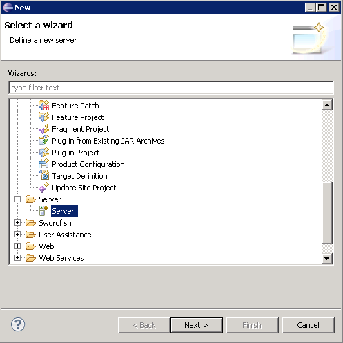
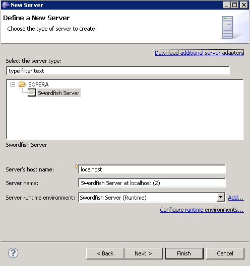
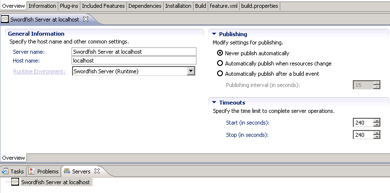

To create and define the properties for a new server:
-
Click
 File
> New
> Other
> Server
.
File
> New
> Other
> Server
.
-
In the New Server window, click Server > Next .

-
In the New Server window, click Swordfish Server.

- In the field Server's host name: type the name of the remote server. The default value is localhost for local deployment. Do not enter protocol type into this field.
- In the field Server name: type the name of the server
- From the drop-down box next to the Server runtime environment select the correct server runtime environment. You can now see the selected server in the workbench in the Servers view.
-
Double-click on the newly added Swordfish Runtime server in the Servers view.
This opens an Overview view where you can see the properties for the selected server.
Note: You cannot modify the options in the Publishing and Timeouts tabs as these functions are not supported in the Swordfish Tooling platform. Simply leave the default settings as is.